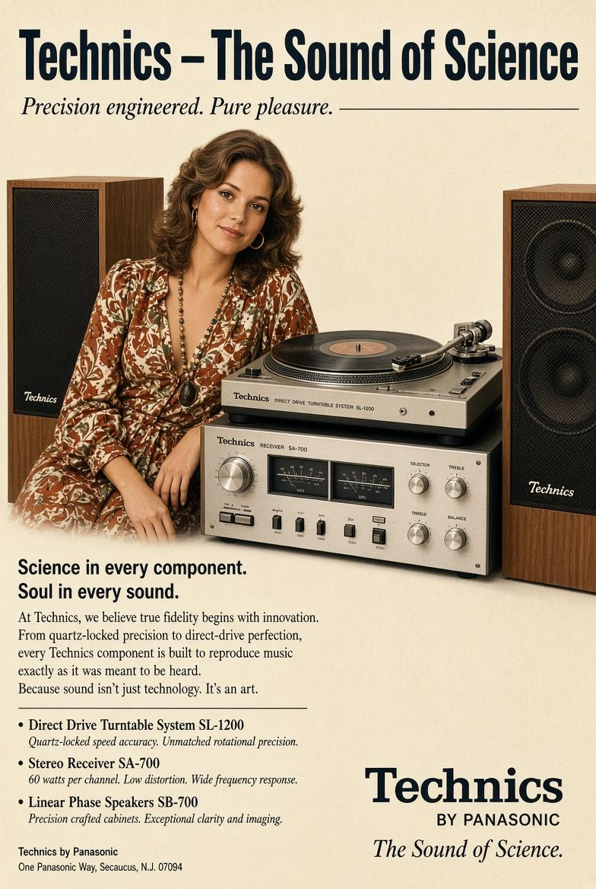
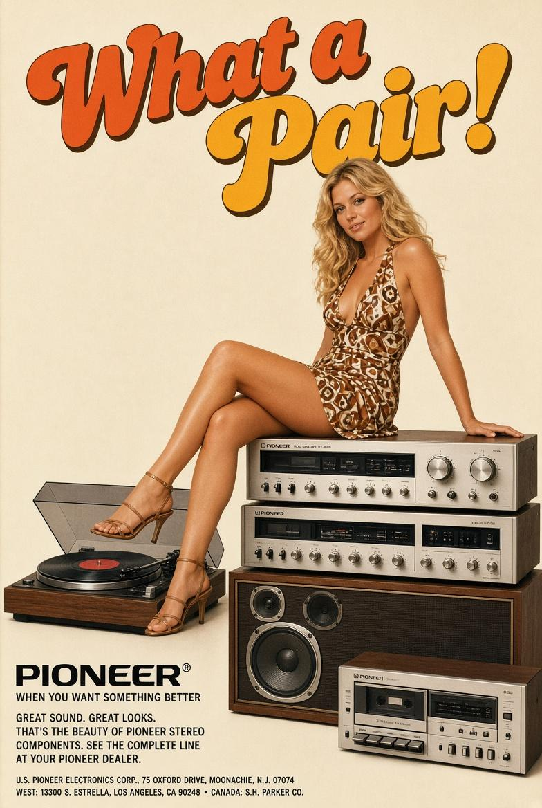
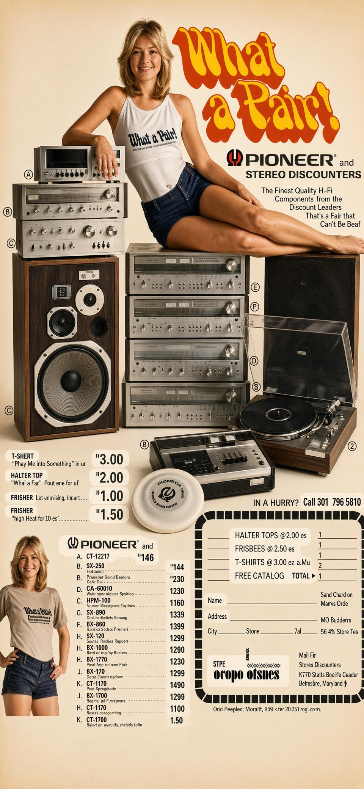

Vinyl desk · The collection
Vintage hi-fi
A crate of magazine advertisements — Technics, Marantz, Pioneer, JBL, Fisher, Yamaha, Kenwood and Sansui — catalogued by our Vinyl desk. Shown as they were printed.
No separate product shots came in the crate, so this is a gallery of the ads themselves: receivers, turntables, speakers and cassette decks, with the names and models as they appear on the page. Three of them also run as advertisements on the front of the site.

Magazine ad · Technics by Panasonic
Technics — The Sound of Science
Direct Drive Turntable System SL-1200, Stereo Receiver SA-700, Linear Phase Speakers SB-700. The tagline on the page: “Precision engineered. Pure pleasure.”

Magazine ad · Marantz
Marantz — The Real Beauty is the Sound
A stacked Marantz system and speakers. The page names Marantz Co., Inc., a subsidiary of Superscope, Inc., Sun Valley, Calif.

Magazine ad · 1974 · Marantz
Nice Pair. Listen to This.
Model 2270 stereo receiver and Model HD-88 speaker system, as printed on the page. © 1974 Marantz Co., Inc.

Magazine ad · Pioneer
What a Pair of Speakers!
The Pioneer SX-737 receiver, CT-F7171 cassette deck and CS-99A speakers. “When you want something better.”

Magazine ad · Pioneer
What a Pair!
A Pioneer stack — receiver, a second component, speakers, a turntable and a cassette deck. The body copy does not print model numbers.

Magazine ad · Pioneer
What a Sound!
SX-727 stereo receiver, CS-66A speakers and CT-4141 stereo cassette deck, as named on the page. “The Sound of the 70s.”

Magazine ad · JBL
JBL — The new Lancer 66
“It speaks for itself.” The bottom of the page reads “Feel the Music.” James B. Lansing Sound, Inc., Los Angeles. The speaker badge reads Lancer 66.

Magazine ad · Pioneer and Stereo Discounters
What a Pair! — catalog page
A tall catalog-style page: a stacked system, a turntable, a speaker, merch and a mail-order coupon. Pioneer and Stereo Discounters are named at the top of the page.

Magazine ad · Fisher / Altec Lansing
The Fisher 434B Receiver
“60 watts per channel. Total harmonic distortion less than 0.5%,” as printed. The page also carries Altec Lansing branding.
Magazine ad · Yamaha
Yamaha — Natural Sound
A Yamaha CR-620 receiver and YP-211 turntable, both labeled on the units, with a pair of Yamaha speakers. “Stereo that sounds like music.”

Magazine ad · Kenwood
Kenwood — Listen to the Difference
The copy names the KR-6030 receiver, shown in a stack with Kenwood speakers and other components. “Kenwood difference. You can hear it.”

Magazine ad · Sansui
Sansui — Music in the Name
A stacked Sansui system with SP-2000 and SP-1000 speakers, as labeled on the cabinets. “When you want the best, the name is Sansui.”
Fine print: These are period-style magazine advertisements, shown as printed. Brand names and model numbers are taken from the pages themselves. This is a non-commercial fan page and is not affiliated with Technics, Panasonic, Marantz, Pioneer, JBL, Fisher, Altec Lansing, Yamaha, Kenwood, Sansui or any of the companies named in the ads.
← Back to the true tales